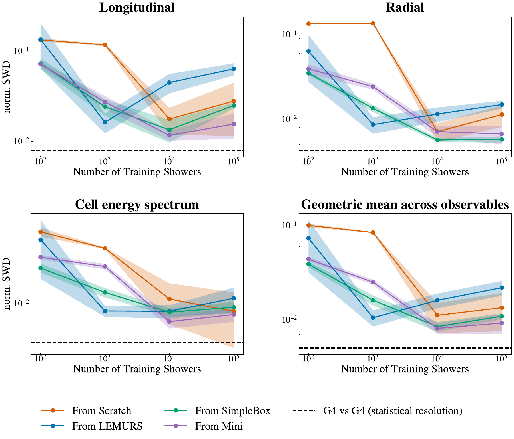
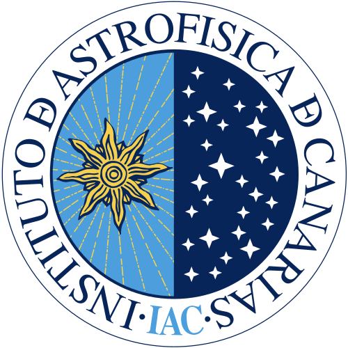
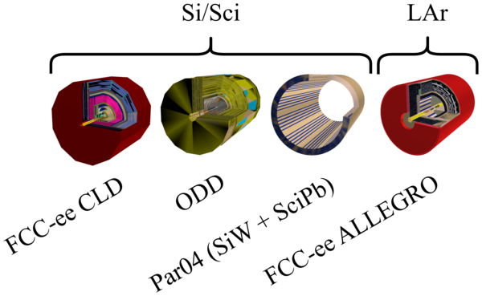
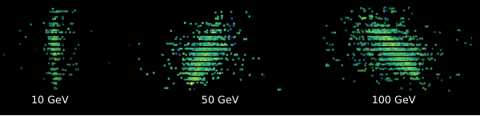
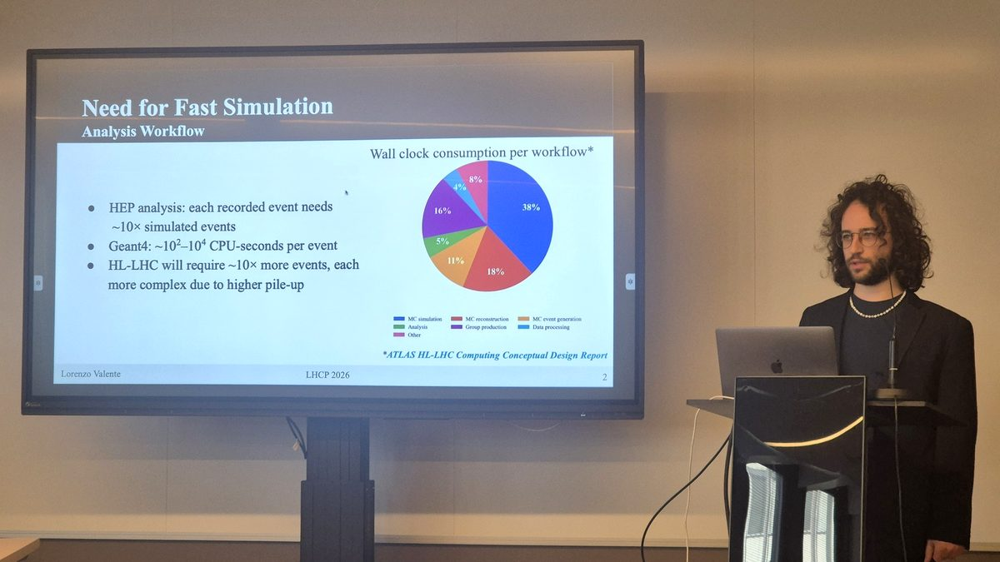

October 2023 to present
PhD in Physics
University of Hamburg. Supervisor Prof. Gregor Kasieczka, co-supervisor Dr. Frank Gaede (DESY).
I build generative models that simulate particle showers in calorimeters. My thesis makes one shower model reusable across calorimeter geometries: pre-trained on several detectors, it adapts to a new one with two orders of magnitude fewer Geant4 showers than a model trained from scratch.

I condition a flow matching transformer for shower point clouds on the calorimeter geometry and pre-train it on several detectors. Fine-tuned on a detector it has never seen, it matches a model trained from scratch on a full dataset with two orders of magnitude fewer Geant4 showers (arXiv:2608.18233).

The first step: a shower model trained on one calorimeter transfers to another with a fraction of the data (JINST 21 (2026) P07037).
I produce the pre-training data with Geant4 and DD4hep for a family of sampling calorimeters (code, data). Along the way I develop extensions to ddFastSim, the DD4hep fast simulation framework.
Fine-tuning still needs Geant4 showers from every new detector. I am now conditioning the model on a numerical description of the calorimeter, its materials and layers, so that a new geometry enters as an input and not as a new training set.
I am a PhD candidate in Gregor Kasieczka's group at the University of Hamburg. Before that I studied physics in Bologna. I am also a classical pianist.





Full list on INSPIRE.

I would like to co-supervise Bachelor's and Master's students on generative models for detector simulation. Students looking for a project can email me.